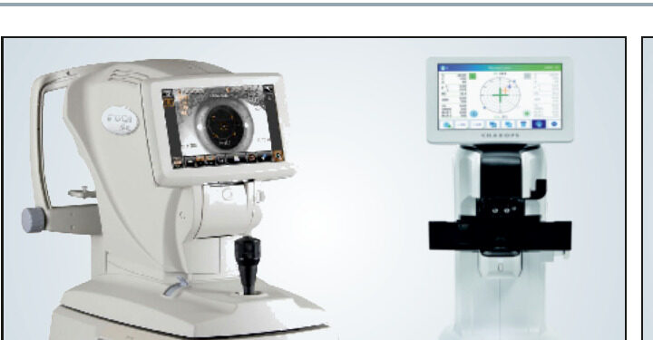
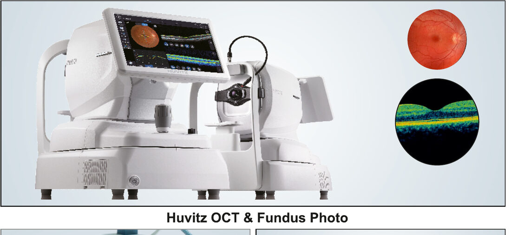
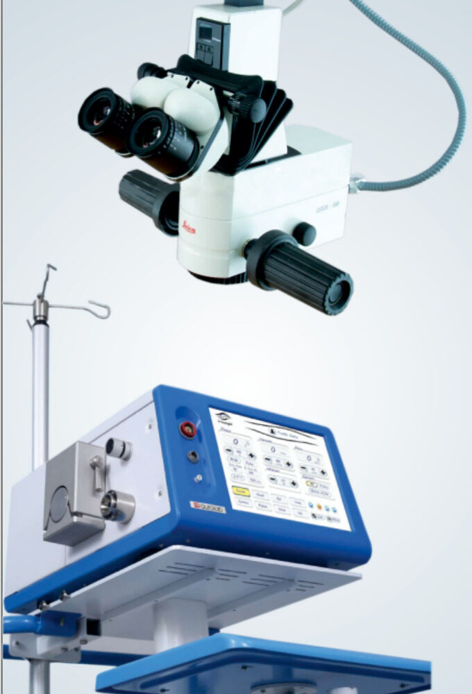
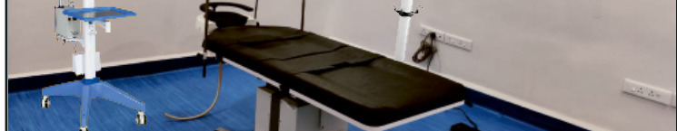

From routine examination to specialised retina, glaucoma and paediatric care.
सर्वसमावेशक डोळ्यांची तपासणी — a full check-up covering vision, eye pressure and overall eye health.
बुबुळ व कॉन्टॅक्ट लेन्स क्लिनिक — diagnosis of corneal conditions plus contact lens fitting.
डोळ्याच्या श्वेतपटलाच्या (रेटीना) आजाराचे निदान व उपचार.
डोळ्याच्या मागील भागात इंजेक्शन व लेझरद्वारे ट्रिटमेंट.
न्युरो ऑप्थॉल्मोलॉजी निदान व उपचार — diagnosis and management of vision problems linked to the nervous system.
काचबिंदु निदान व उपचार — eye pressure testing and long-term treatment to protect the optic nerve.
लहान मुलांच्या नेत्रविकाराचे निदान व उपचार — vision screening and eye care for children.
बिनटाक्याची मोतीबिंदु शस्त्रक्रिया व फेकोद्वारे शस्त्रक्रिया — stitch-less cataract surgery with intraocular lens.
डोळ्याची पुढीच्या भागाची शस्त्रक्रिया — surgical treatment for the front part of the eye.
लासुरची शस्त्रक्रिया — surgery to clear a blocked tear duct.
कॉम्प्युटरद्वारे नेत्र तपासणी
श्वेतपटलाचा (रेटिना) स्कॅन
डोळ्याच्या मागच्या पडद्याचा फोटो
डोळ्याच्या पुढच्या भागाचा फोटो
डोळ्याच्या पुढच्या भागाचा स्कॅन
काचबिंदु स्कॅन
ऑप्टीकल बायोमेट्री व ए-स्कॅन
ND-YAG आणि रेटिना ग्रीन लेझर
चष्मे व कॉन्टॅक्ट लेन्सचे दुकान




Call, WhatsApp or use our contact form to schedule a convenient time.
Our team conducts a thorough eye examination using modern diagnostic tools.
The doctor explains findings and recommends the right course of treatment.
We guide you through treatment or surgery, with attentive follow-up care.
Speak with our team — we'll help you find the right consultation for your concern.